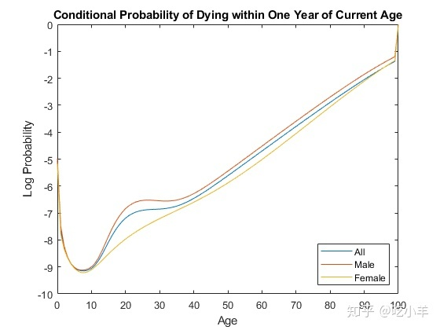

Home
本示例说明如何对寿命表使用基本工作流程。
加载寿命表数据文件。
load us_lifetable_2009使用默认heligman-pollard参数模型根据生存数据校准寿命数据。
a = lifetablefit(x, lx);从校准的死亡率模型生成寿命表系列。
qx = lifetablegen((0:100), a);
display(qx(1:40,:))
0.0063 0.0069 0.0057
0.0005 0.0006 0.0004
0.0002 0.0003 0.0002
0.0002 0.0002 0.0002
0.0001 0.0001 0.0001
0.0001 0.0001 0.0001
0.0001 0.0001 0.0001
0.0001 0.0001 0.0001
0.0001 0.0001 0.0001
0.0001 0.0001 0.0001
0.0001 0.0001 0.0001
0.0001 0.0001 0.0001
0.0002 0.0002 0.0001
0.0002 0.0002 0.0002
0.0002 0.0003 0.0002
0.0003 0.0004 0.0002
0.0004 0.0005 0.0002
0.0005 0.0006 0.0003
0.0006 0.0008 0.0003
0.0007 0.0009 0.0003
0.0008 0.0011 0.0003
0.0008 0.0012 0.0004
0.0009 0.0013 0.0004
0.0009 0.0014 0.0005
0.0010 0.0014 0.0005
0.0010 0.0015 0.0005
0.0010 0.0015 0.0006
0.0010 0.0015 0.0006
0.0010 0.0015 0.0007
0.0010 0.0014 0.0007
0.0011 0.0014 0.0007
0.0011 0.0014 0.0008
0.0011 0.0014 0.0008
0.0011 0.0014 0.0009
0.0011 0.0014 0.0009
0.0012 0.0015 0.0010
0.0012 0.0015 0.0011
0.0013 0.0016 0.0011
0.0014 0.0017 0.0012
0.0015 0.0018 0.0013绘制qx系列并显示图例。级数qx是一个人在年龄X 时，会在年龄 X 和系列中下一个年龄值之间死亡的条件概率
plot((0:100), log(qx));
legend(series, 'location', 'southeast');
title('Conditional Probability of Dying within One Year of Current Age');
xlabel('Age');
ylabel('Log Probability');
注：本文根据MATLAB官网内容修改而成。
======================================================================
我的测试结果及程序
下面是我测试的代码：